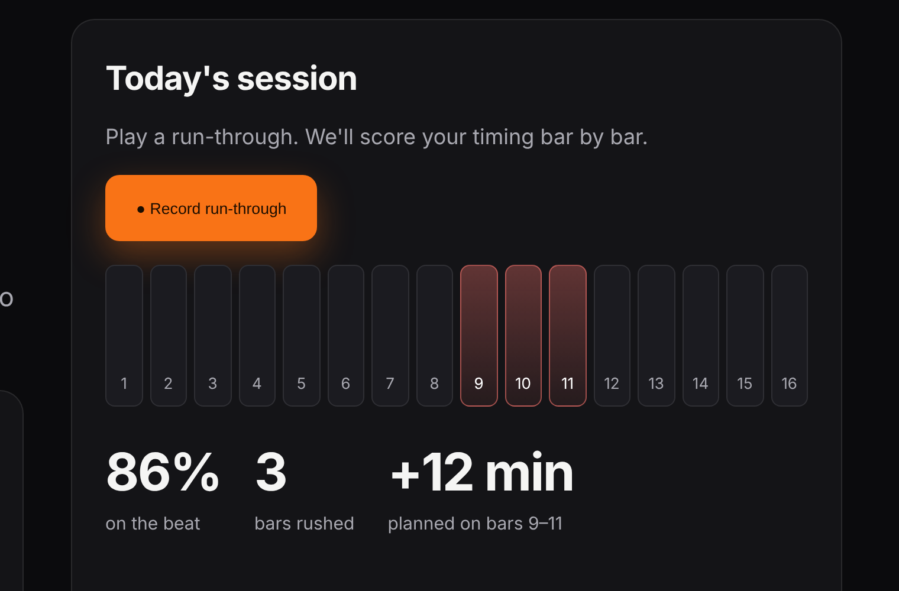
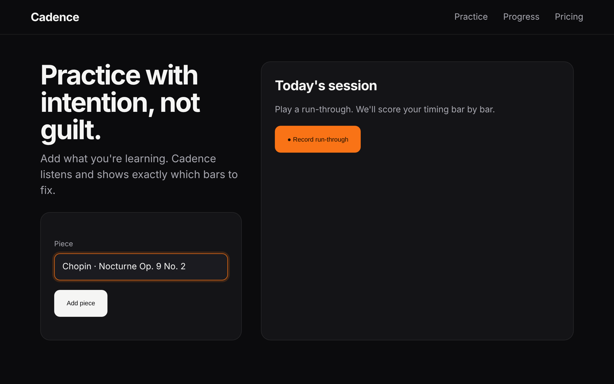
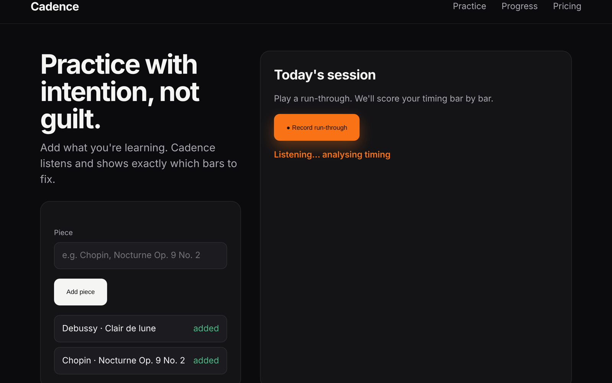
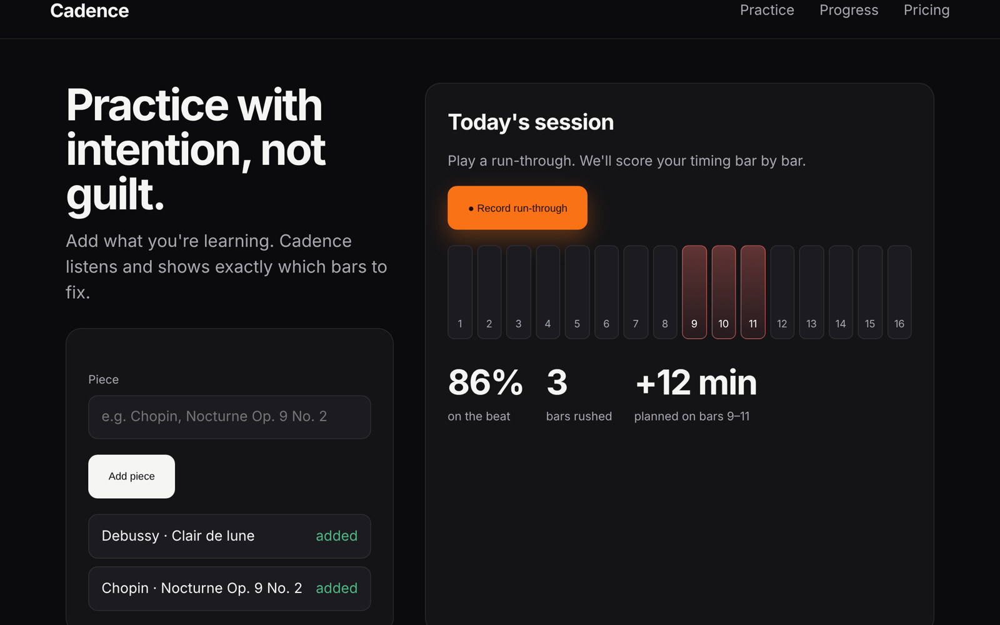

A practice coach that listens to you play and plans your week around the bars you actually struggle with.
timing accuracy on a laptop CPU
testers kept using it
accounts needed to try it
Run-throughs spend 80% of the time on bars the student can already play.
Duke & Simmons, 2006 · practice studiesOne lesson a week, six days of guessing what happened at home.
14 teacher interviews, Nov 2026
add a 2× screenshot30–90 s recording, no special mic.
Aligned to the score within ±40 ms.
Extra minutes go to the rushed bars.

add a 2× screenshotType it, Cadence finds the score.

add a 2× screenshotPhone mic, 60 seconds.

add a 2× screenshotWatch the plan change.
Web Audio, 44.1 kHz
spectral flux, WASM
dynamic time warping
spaced repetition
Phone audio drifts and echoes. Aligning onset features (not raw audio) to the score keeps error within ±40 ms.
median error vs. a teacher
to analyse 60 s, on-device
of audio leave the phone
more time on the passages that needed it (9 testers, 5 days)
of flagged bars matched a teacher's markings (40 recordings)
US students in school music programs · NAfME 2024
| Cadence | Practice logs | Tuner / metronome apps | |
|---|---|---|---|
| Hears what you played | ✓ bar by bar | ✗ | tempo only |
| Plans what to practice | ✓ adapts weekly | manual | ✗ |
| Teacher sees progress | ✓ shared link | paper | ✗ |
| Works offline | ✓ | ✓ | ✓ |
| Price for students | free | free | $0–10/mo |
Practice with intention, not guilt.
From submission/QA.md (judge-qa-coach). Jump here with the slide number during Q&A.
Every flag shows a confidence score and replays the moment, so students dismiss false flags in one tap.
86% match with teacher markings · 40 recordingsAll of it: planner, recording flow and beat tracker. Open-source audio libraries are listed in the README.
commit history from Nov 29Metronomes keep tempo. Cadence tells you which bars drifted and changes what you practice next.
comparison, slide 6Up to a normal living room. A loud room lowers confidence and we say so on screen.
tested at 55 dB and 70 dBFree for students. Studios pay per teacher for the progress view; schools buy seats.
3 teachers asked for pricingNothing in the demo. Score import from photos is planned, not built.
PROGRESS.md statuses